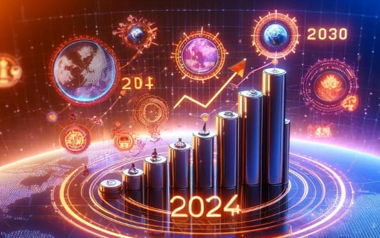

Historia
1943: La primera red neuronal artificial
En un artículo académico, el psicólogo cognitivo Walter Pitts y el
experto en cibernética Warren McCulloch demuestran cómo un sistema
de neuronas artificiales puede aprender del mismo modo que los
humanos. La teoría expuesta por Pitts y McCulloch sigue siendo hoy
la base de los algoritmos de aprendizaje profundo.
1950: El test de Turing
Para simplificar, una persona tiene que conversar textualmente con
dos entidades sin saber cuál es humana y cuál artificial. Si no
puede distinguirlas correctamente, la máquina debe considerarse
inteligente. Esta prueba, que al día de hoy ninguna máquina ha
superado (y que probablemente debería actualizarse), pasará a la
historia como el Test de Turing. Para continuar con la lectura da
click en
leer más.
Herramientas IA, ¿Qué son?
Las herramientas de IA son aplicaciones de software que utilizan
algoritmos de inteligencia artificial para realizar tareas que
normalmente requieren inteligencia humana. Estas herramientas pueden
analizar datos, reconocer patrones y tomar decisiones o hacer
predicciones. Las características clave de estas poderosas
herramientas incluyen capacidades de aprendizaje automático,
procesamiento de lenguaje natural y visión por computadora. Están
diseñadas para automatizar tareas, proporcionar información y
optimizar , estas herramientas permiten a las personas y empresas
trabajar de manera más eficiente, tomar decisiones informadas y
resolver problemas complejos en campos como la educación, la
medicina, la creatividad y los negocios. Para continuar con la
lectura da click en
leer más.

Furturo de la Inteligencia Artificial
El futuro de la IA promete un mundo más interconectado, eficiente y
lleno de innovación, pero también plantea desafíos importantes, como
garantizar la privacidad, evitar sesgos y gestionar su impacto en el
empleo y la sociedad. La inteligencia artificial está avanzando más
rápido de lo que habíamos previsto. Hace apenas cinco años, nadie
podía imaginar la capacidad actual de ChatGPT, y hace tan solo tres
años, ni siquiera se consideraba factible generar contenido
automatizado. Hoy en día, es una realidad”, dice Cen. Ante este
panorama, resulta inevitable preguntarnos: ¿cuál es el futuro de la
inteligencia artificial? ¿Qué nos depara esta tecnología? El título
de este artículo nos invita a explorar esta cuestión intrigante y
compleja. Para continuar con la lectura da click en
leer más.